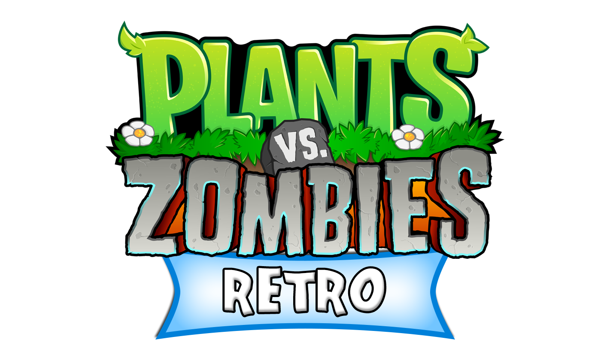

Jugar Ahora
Descripción general
Plants vs Zombies: Retro es una adaptación del famoso juego Plants vs Zombies con una estética retro, cuya idea será desarrollada por LosZombiesSonVeganos.
Caraterísticas
Tower DefenseVista TopDown
Planta tus defensas 🌻
Juego de Supervivencia Zombie en oleadas 🧟
Fácil, divertido y simplemente INCREIBLE
*Características sujetas a cambios